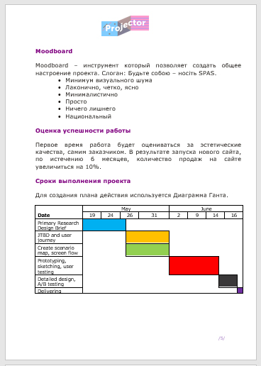
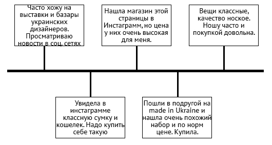
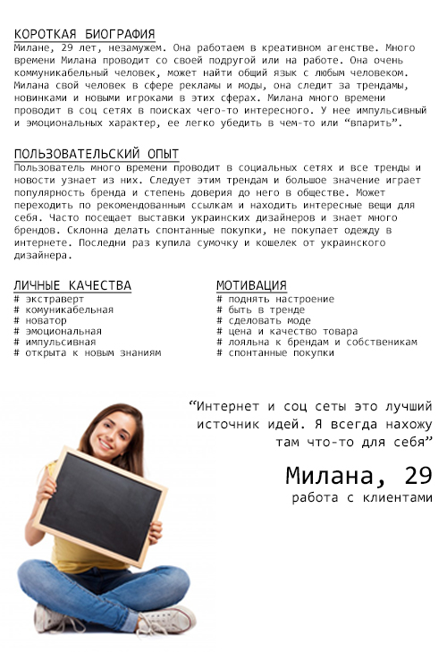
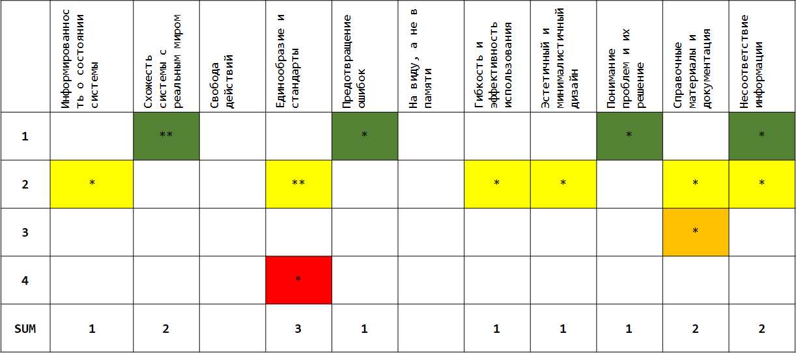

SPAS
Информация о проекте
SPAS – это бренд casual одежды, локальный бренд в Киеве. Это бренд, который совмещает в себе элементы глобальной культуры и национального. Для компании был проведен redesign существующего сайта.work_plan
- Primary Research, Design Brief
- Build personas and user journey
- Heuristic evaluation
- Prototyping, sketching, user testing
- Detailed design, testing

personas_JTBD
На основе проведенных интервью с пользователями, было разработано персоны, а также выделено основные Use cases. 

heuristic_evaluation
Была проведена эврестическая оценка уже существующего сайта. На основе найденных проблем в существующем интерфесе, было предложено рекомендации для разработки нового интерфейса.

testing
Вид тестирования: Usability testingКоличество пользователей: 4 пользователя
Объект тестирования: прототип интерфейса сайта
Способ для фиксации: видеозапись тестирования и записки
Сценарий тестирования: два сценария тестирования
На основе результатов тестирования были представлены рекомендации к исправлению прототипа, а также подтверждено работоспособность прототипа.